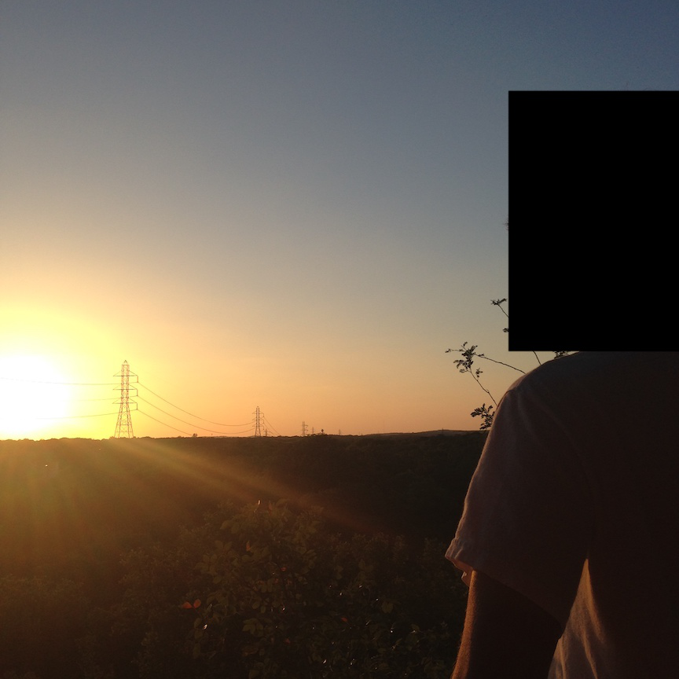
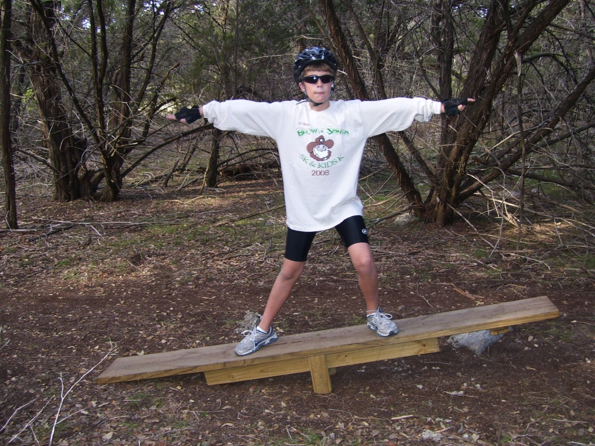
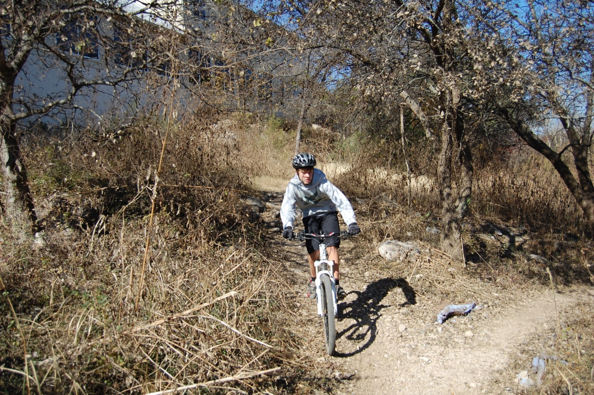
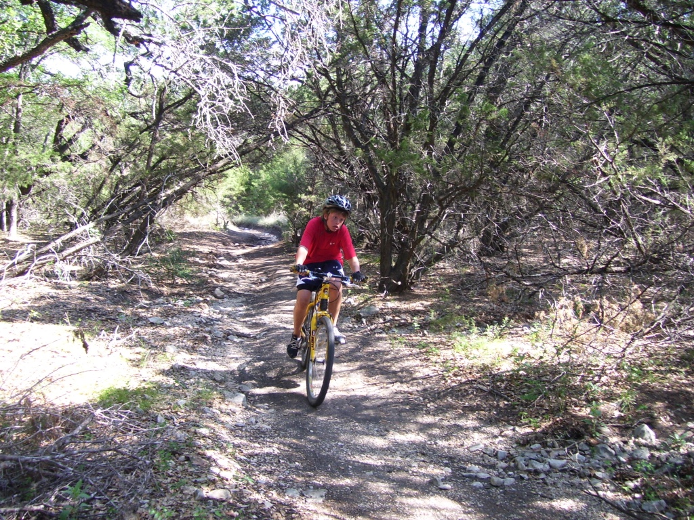
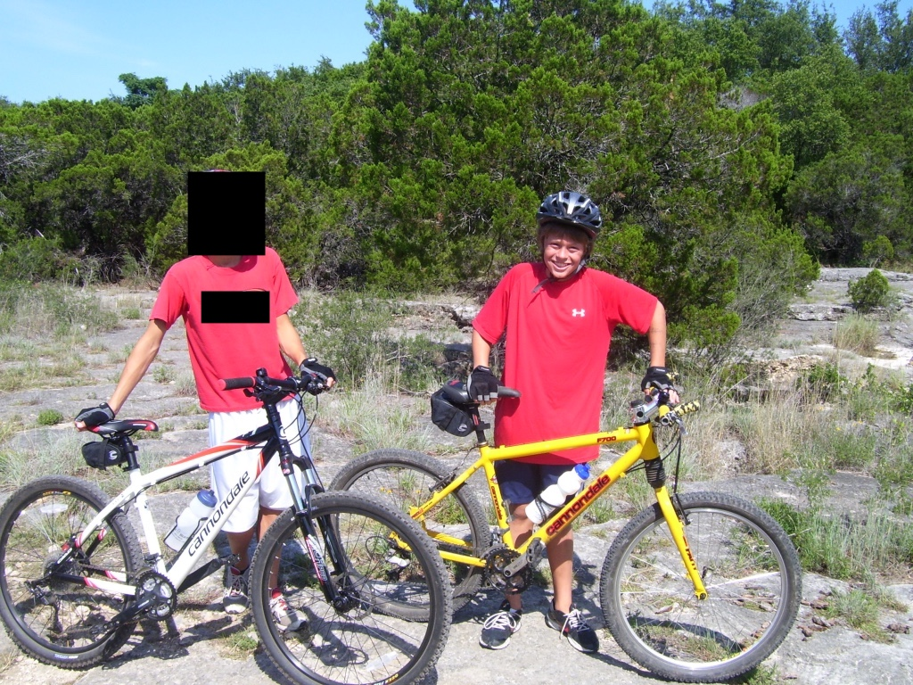

At this point I'm not sure if riding my home trails brings me more happiness or more sadness. Every section in those woods evokes happy memories, but are closely followed by sadness upon the realization that those memories are gone, never to be relived. I'm reminded of everything I've lost over the years: my childhood, my trails and private place, my father. And none of these were gradual losses. I blinked and found myself in university; I came home and found my trails razed; I took a phone call and learned of my father's death. The signs of the first two were overt, but the saying continues to ring true:
I wish there was a way to know you're in the good old days before you've actually left them.
One day I was riding with my Dad in middle school, the next those trails are gone and I'm alone and all grown up.
There are very few trails that I don't associate with something. They are the ones that were created relatively recently or those I never found/rode with my father. For this I'm somewhat grateful, for it gives me a chance to make my own happy memories on them, rather than try to have them live up to what once was.
Destruction is just that: something or someone, tangible or not, gone, never to return in its original form. Memories can't be Ship-of-Theseus-ed. The acres of land that were destroyed for mansions can't be reclaimed and the trails restored. They are gone forever, only preserved in the minds and the pictures and videos of those who had been there.
I remember my first time ever walking back there was with my family and the F family. RF knew the way and showed us an awesome waterfall and teeter-totter (which remained there in one form or another up until around 2017). I was a bit awestruck at this piece of wilderness that was accessible from our home.
I remember riding with JW and Dad during golden hour on a Saturday. We stopped at trail at the top of the rocky downhill and chatted for a bit. I remember the warmth of the sun on my face and back and the pristine sunlight shining through the trees.
I remember running with my bro after going to Enchanted Rock in the cool winter sun, taking it easy and just chatting. It was Spring Break and there was no concern of tomorrow.
I remember going 4 vs. 6 in airsoft against high schoolers and getting absolutely whooped, but still having a blast doing it. We took shelter in the tree fort and they quickly surrounded us, forcing us to fight valiantly until the end.
I remember falling straight down a rock face and being knocked unconscious. My brother carried me out with my friends at my side.
I remember building Fort Beaver over the course of weeks. We had group meetings to discuss the Fort's next plans and what our responsibilities were. The plans for the Fort were grand and ambitious and we had no plans of not carrying them out.
I remember dragging my plastic ramp to the gulch and jumping it. I gave myself my normal "3..2..1" countdown and went for it. Little did I know that plastic and loose dirt don't grip too well with each other. I barely landed it.
I remember crying upon hearing they had bulldozed a major section of trail, the first sign of what was to come many years later. I felt violated, like someone had found my secret and destroyed it.
I remember riding on the coldest winter day with my balaclava and feeling like an absolute hoss.
I remember my brother riding on an ice-covered puddle by the teeter totter and overestimating its strength. It quickly gave away and he came crashing down. Did I mention it was freezing outside?
I remember time trial racing Dad down the length of the entire woods and back. It was a Saturday or Sunday afternoon and there weren't many people on the trail. He went first and I went second. I knew his time and he knew mine in real-time, but I never knew mine while riding. I pushed and pushed on the last few miles and somehow beat him by a couple of minutes. One of the proudest moments of my mountain biking career.
I remember dreaming up new builds, lines, and features in the woods during school: a wooden wall ride here, a rock face ascent followed by skinny there, a dual slalom course here, a kicker into mulch there. It was all perfect; a mountain biking mecca in my backyard for all riders to enjoy.
I remember riding with the new socks my grandmother had gifted me for Christmas. I was so excited to show those bad boys off.
I remember finding the technical spot to the right directly after H and wondered how something so wonderful and fun has slipped by my all-knowing eye.
I remember running before Oregon during dusk and seeing one of the biggest spiders ever against the backdrop of a golden-purple sky.
I remember rucking with KO and being saddened by the state of the area behind B.
I remember riding the winter of my freshman year on a cold, overcast day. I was the only one out there and thought about how lucky I was to have the trails so close at hand.
I remember brainstorming the name for what Dad and I now refer to as "Lefty". He was the one to name it, along with Owl and Wasp. I named North Shore.
I remember running after driver's ed and before meeting up with friends. It was a dark winter evening and I was racing home to make sure I got to the dinner on time. No one else was out there except me.
I remember trying to make it to E Park through the most unkempt part of the trails. We traversed rock and overgrown weeds for 15 minutes before calling it quits. Had we gone on for another 15 or so we would have made it to paradise.
I remember "sessioning" the hill by H with EF. We just took turns riding down and trying to look cool doing it.
I remember coming up with scenarios of me running into mob executions and having to get away. Those were some of the fastest miles I had run.
I remember dragging Mom out to film for the mountain bike video I was making. We spent many, many hours over the course of a few days getting the shots just right.
I remember shredding around the teeter totter section and thinking about HM and MR.
I remember stopping behind IW to change flat tire, and eventually deciding just to forego the pain and hike-a-bike back home.
I remember riding the tech with CR, showing him all the cool lines and hidden places back there.
I remember walking miles with JW, CH, and another guy to meet up with a few of CH's friends. JW and I left early to walk home and had a good chat while at it.
I remember wading in the floodwaters with CR and AO and wondering what else was in it with us.
I remember building a dam underneath the SF bridge and being semi-successful.
I remember going up to Eagle's Nest with a variety of my friends: neighborhood, cross country, and unaffiliated.
I remember walking back there on a very sunny morning in 2004 with my family.
I remember driving back there in a Jeep to release a captured squirrel into the wilderness.
I remember riding the trails and neighborhood with Dad the day before my senior year of high school. This ride was the most beautiful I've ever had in my life, hands down. The sun was golden, the air was warm but not hot, and I had no worries or qualms with life. Just me and Dad having a great time in the woods away from everyone and everything.
I remember the good times.